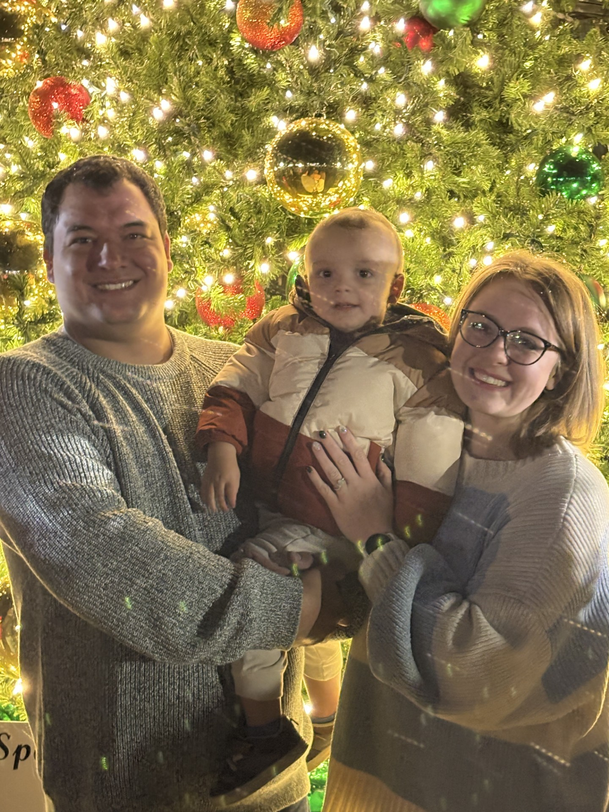

My name is Michael Buell - I am 31 years old and was born and raised in Nederland, Texas, but my life took an unexpected turn when Hurricane Rita forced my family and I to find dwelling elsewhere in 2006. We ultimately landed in Gladewater, Texas. After graduating high school, I began working as a technician for a security company and as an assistant in the media department at a church while attending Kilgore College. The roles were both exciting and challenging, but I found myself searching for deeper purpose. That search ultimately led me to the Marine Corps recruiting office, where I made the life-changing decision to enlist. I served as an active duty Marine from 2015 to 2019. During this time I was deployed to Iraq and Afghanistan and operated as a Sergeant leading a team of infantry mortarmen. That time was then followed by inactive reserve service until 2022. The experience shaped me in countless ways.
In early 2020, I met my wife, and together we began building a life in East Texas. Our greatest joy and accomplishment arrived in 2023 with the birth of our son, Oliver—though everyone calls him Ollie. Becoming a father has been the most rewarding chapter of my life. My goal is to raise Ollie to be a young man of integrity, empathy, and with a sense of humor to carry him through life’s darker moments.
As our family grows, so does my desire to grow personally and professionally in support of myself and my family. I’ve returned to academia to finally pursue a degree in a field that has always fascinated me: technology. The ever-evolving nature of technology keeps me curious and engaged, and I’m excited about the opportunities it continues to offer throughout the workforce.
Outside of school and family life, I enjoy spending time with loved ones, attending church, and gaming with some of my buddies. I also have a passion for working on cars and playing instruments like the piano and guitar—creative outlets that keep me grounded through struggles life often presents.
